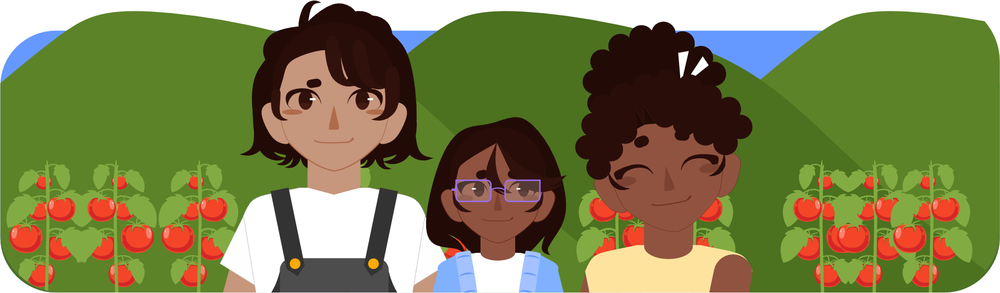

Era uma vez, numa pequena cidade do interior, uma menina chamada Ana. Ela, com seus 9 anos de idade, vivia com seus pais numa fazenda acolhedora e calma onde cultivavam tomates. A produção de tomates era o sustento da família e Ana adorava participar de todas as atividades e cuidados.
Ana acordava cedinho todos os dias, quando o sol ainda estava se espreguiçando no horizonte. Em uma dessas manhãs de suas férias escolares ela correu para a cozinha, onde sua mãe, Dona Maria, preparava um café da manhã delicioso com pão caseiro e geleia de morango, morango esse que também era produzido ali. Seu pai, Seu João, já estava no campo, verificando os tomateiros.
— Mamãe, o papai já está no campo? — Disse espiando pela janela da cozinha, tendo visão direta da plantação de tomates.
— Sim, querida, ele saiu bem cedinho. Vamos terminar nosso café e ir o ajudar. — Maria dizia a sua filha enquanto terminava de servir a mesa.
Ana chamou seu pai para que os três tomassem o café da manhã juntos, e então, após o café, a garota animada colocou seu chapéu de palha que tanto gostava, pegou sua cesta e foi para a plantação ajudar seu pai junto de sua mãe. Ela adorava sentir o cheiro da terra molhada e ver os pequenos tomates verdes se transformando em lindos frutos vermelhos. Seu pai a ensinava sobre como cuidar das plantas, explicando a importância da água, do sol e do solo fértil.
— Ana, nós já temos alguns tomates que estão quase prontos para a colheita, você se lembre como identificar quais estão no ponto certo? Te disse alguns dias atrás.
— Acho que sim, pai. Os bem vermelhinhos, não é?
— Isso mesmo! Vamos colher esses. Você está aprendendo muito bem, filha. — Ele colocou a mão na cabeça da filha, por cima do chapéu dela, como um ato carinhoso, e ela sorriu orgulhosa.
Ana aprendia rápido e já sabia reconhecer quando um tomate estava no ponto certo para ser colhido.
Após alguns dias, após a colheita de boa parte dos tomates, ela estava ajudando a mãe a preparar as caixas de tomates que seriam vendidas na feira da cidade.
— Ana, hoje vamos levar 15 caixas para a feira. Acha que consegue carregar algumas? — Mesmo sendo pesado, sua mãe tinha a plena noção que a garota amaria ajudar, mesmo que carregando apenas uma caixa.
— Sim mãe! Posso carregar essa? — Dizia pegando uma caixa pequena, a qual era a mais leve.
— Claro, meu bem, mas tome cuidado para não se machucar.
Aos sábados, Ana e seus pais carregavam a caminhonete com os tomates e iam para a feira. A feira era um lugar vibrante e movimentado, cheio de cores e aromas. Ana adorava conversar com os clientes e contar sobre como os tomates eram cultivados com tanto amor e dedicação. As pessoas gostavam de comprar os tomates da família de Ana, pois sabiam que eram frescos e saborosos, além de ter uma conversa divertida com a menina que não poupava palavras.
— Bom dia, Ana! Esses tomates parecem ótimos. Você sabe se foram colhidos hoje? — Uma cliente dizia chegando para ver os tomates, uma conhecida da família, que sempre puxava conversa com Ana.
— Bom dia dona Lia! Sim, foram colhidos bem cedinho, antes do sol nascer. Estão fresquinhos!
— Que ótimo! Vou levar 6 tomates então.
Um dia, a professora de Ana chamada Beatriz, visitou a fazenda com alguns colegas de classe da menina. Ela queria mostrar aos alunos a importância da agricultura familiar. Ana se tornou a guia do grupo, explicando tudo o que havia aprendido com seus pais.
— Ana, você pode explicar para a turma como vocês cuidam dos tomates?
— Claro. Bom, primeiro, tem uma grande variedade de tomates existentes, tipo o Tomate Cereja, Tomate Caqui, Tomate Holândes, entre inúmeros outros. Aqui, meus pais cultivam o Tomate Caqui. Depois de saber o tomate que mais vai se adaptar ao lugar que ele será plantado, vem a preparação do solo, com matéria orgânica por exemplo… Meu pai também disse que tomates gostam de solos levemente ácidos, mas eu sinceramente ainda não entendi muito bem isso. — Sorriu sem jeito enquanto explicava.
— Ah sim, isso nós vamos ver na sala de aula Ana, você vai aprender ainda. — Confortou a professora.
— Ok, continuando… Depois do preparo adequado do solo, vem o plantio, nesse momento a presença do sol é muito importante. Então, a partir do plantio, vem uma sequência de cuidados, como regar certinho, a adubação, o controle de pragas e doenças que pode afetar a produção. No caso dos tomates, a poda e o suporte adequado também são super importantes. E então, quando tudo estiver certinho, maduro, e no ponto, é feito a colheita. Em plantações enormes é usado muitas vezes algum trator especializado, mas aqui, como mantemos uma agricultura familiar, a colheita é feita manualmente e com muito cuidado.
Os amigos de Ana ficaram encantados durante a explicação, podendo ver a plantação ao seu redor, eles entenderam a importância de valorizar o trabalho dos agricultores.
— Ana, isso parece muito trabalho. Seus pais não se cansam?
— Bom, é um trabalho árduo, então sim, é bem cansativo aos meus pais. Mas mesmo sendo cansativo, é algo fundamental para que muitas casas tenham os tomates fresquinhos e totalmente orgânicos na mesa. É um trabalho muito importante para todos, mesmo quando não é percebido.
Outras perguntas foram feitas a Ana, seus colegas realmente ficaram encantados conhecendo de perto aquele lugar. Podendo ver a plantação de tomates, e até mesmo outras pequenas plantações que haviam ali, tudo sendo cuidado pela família de Ana, e até mesmo, um pouco por ela.
Ao final da visita, todos foram para suas casas tendo noção de como é importante o trabalho no campo na vida de todos. Muitas coisas das quais consumimos diariamente, são frutos de um trabalho dedicado de famílias como a de Ana, e ela sente o grande orgulho disso.